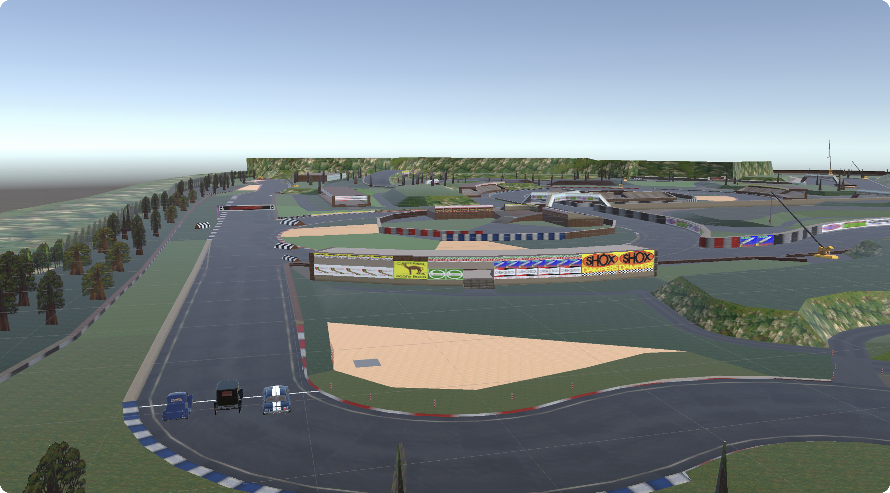

Concept
Een VR-ervaring waarin bezoekers plaatsnemen in drie Ford-iconen en de evolutie van autorijden voelen.
- Ford Model T
- Ford Model 40
- Ford Mustang
We kozen één merk om in de beschikbare tijd kwaliteit en afwerking te garanderen.

Groepsproject: we ontwikkelden een VR-ervaring die bezoekers laat “rijden” in iconische Ford-modellen, met realistische visuals, snelheid en sound.
Autoworld Brussel heeft een indrukwekkende collectie, maar weinig actieve beleving. Onze vraag: hoe maken we het museumbezoek dynamischer en aantrekkelijker voor een breed publiek?
Een VR-ervaring waarin bezoekers plaatsnemen in drie Ford-iconen en de evolutie van autorijden voelen.
We kozen één merk om in de beschikbare tijd kwaliteit en afwerking te garanderen.
*Korte fragmenten om de ervaring te tonen; volledige build op aanvraag (VR-hardware vereist).
Ik leerde teamcoördinatie, Unity XR-workflow, het schrijven van eenvoudige physics-scripts en het ontwerpen voor comfort in VR. Met meer tijd zouden we meer scenario’s, haptics en een queue-/onboardingflow toevoegen.